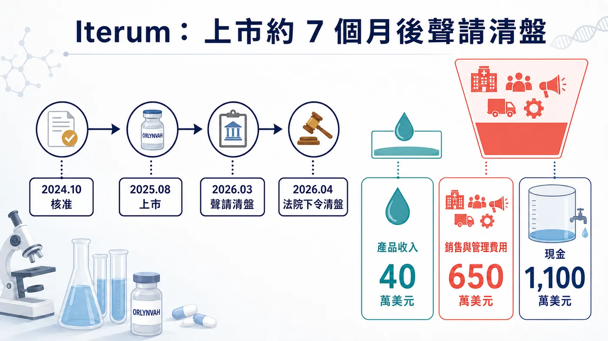
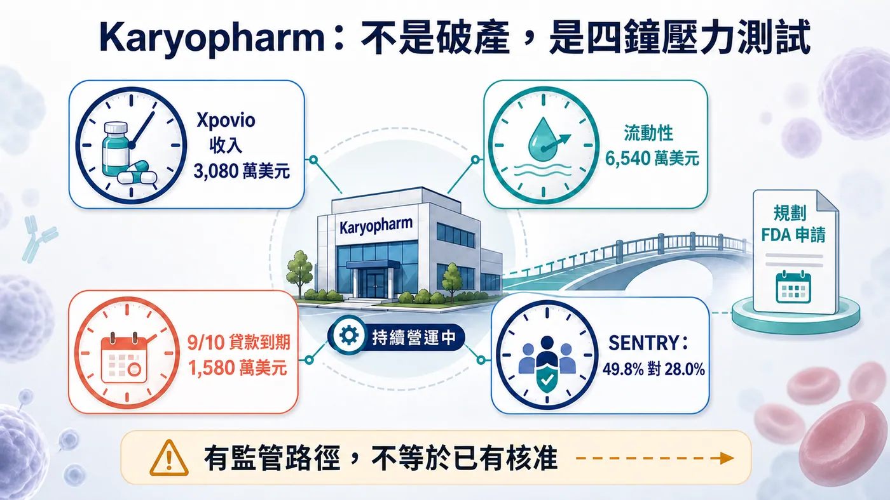
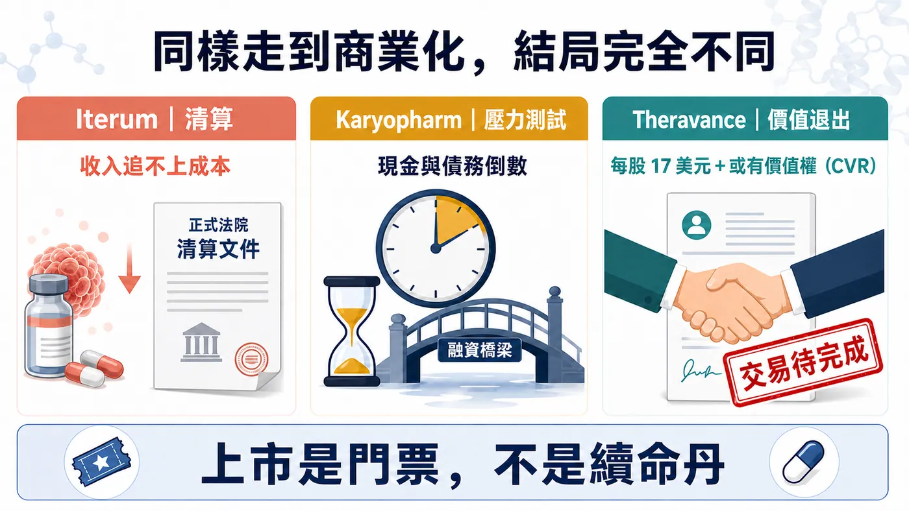

Iterum 的 ORLYNVAH 上市第一季僅有 40 萬美元淨產品收入，銷售、一般與管理費卻約達 650 萬美元；從 2025 年 8 月上市到 2026 年 3 月聲請清盤，約七個月。這不是新藥臨床失敗，而是核准後的商業化現金流來不及長大。單一案例不代表所有 Biotech，卻提醒投資人：上市只是把研發風險換成收入、成本與融資風險；本文不構成投資建議。
分享這篇分析
把這篇文章轉給關注生技醫藥、公司研究或資本市場的朋友。
01｜Iterum：40 萬美元收入，撞上 650 萬美元費用
Iterum 的故事最像一場上市後的自由落體。
ORLYNVAH 是一款口服青黴烯類抗生素，2024 年 10 月獲 FDA 核准，用於治療特定成年女性的單純性尿路感染；適用對象必須是由指定細菌引起，而且可用的口服抗菌選擇有限或沒有替代方案。
這段標籤裡，每一個限定詞都會縮小市場。
抗生素不是一般慢性病藥。醫師要考慮抗藥性、培養結果、用藥管理與支付規則；一款新抗生素即使具有臨床價值，也不代表處方會像降血壓藥一樣自然流進來。醫療體系往往希望把新抗生素留到真正需要時才用，這對公共衛生是好事，對一家只靠單一產品活命的小公司卻很殘酷。
Iterum 原本期待 ORLYNVAH 成為公司翻身的最後籌碼。它花了將近一年準備市場，搭建商業團隊，也與外部公司合作。2025 年 8 月，產品正式上市。
第一季成績很快揭曉：淨產品收入只有 40 萬美元，而且這個數字還包含通路最初備貨；同一季的銷售、一般與管理費用卻高達 650 萬美元，增加主要來自商業化活動。
這不是單純的「賣得不好」。
它代表公司每往市場前進一步，都在用遠高於當期收入的速度燒錢。醫師教育、通路、保險准入、病患支持與銷售團隊不會因處方還沒長起來就停止收費。新藥上市前，研發支出看起來像最大的山；上市後，真正壓垮公司的，可能是一張每天都要支付的市場帳單。
截至 2025 年 9 月底，Iterum 現金只剩 1,100 萬美元。公司曾與兩個潛在交易對手討論 ORLYNVAH 的商業權益，最後沒有簽成交易；股價與上市資格也一路惡化。
2026 年 3 月 27 日，公司向愛爾蘭高等法院聲請清盤；4 月 13 日，法院正式下令清盤。ORLYNVAH 從商業上市到聲請清盤約七個月，翌月法院正式下令。
一款藥完成臨床、通過審查、真的擺上貨架，卻來不及把處方變成現金流。
Iterum 的教訓不是「抗生素沒有價值」，而是臨床需求、可開立患者、支付路徑與商業成本，從來不是同一件事。市場再大，如果真正能被找到、被診斷、被核銷、被處方的患者太少，紙上的市場規模只是海市蜃樓。

02｜Karyopharm：第一名的靶點，救不了最後一名的現金表
Karyopharm 還沒有倒。
這句話必須先寫在前面，因為它目前不是 Iterum 的翻版，而是一場仍在進行的壓力測試。
公司的核心產品 XPOVIO，通用名為 selinexor，是全球第一款獲准的輸出蛋白 1（XPO1）抑制劑。它在 2019 年先進入多發性骨髓瘤市場，「全球首創」曾經是 Karyopharm 最明亮的標籤。
可第一個抵達，不等於第一個建立大市場。
XPOVIO 進入的是高度競爭、治療選擇快速變動的血液腫瘤領域。新機轉要面對的，不只是一張核准證書，還有醫師已熟悉的療法、後線患者的體力、藥物副作用管理，以及其他新療法不斷前移的壓力。
2026 年第二季，XPOVIO 淨產品收入為 3,080 萬美元，較去年同期的 2,970 萬美元成長約 3.7%。這不是沒有生意，卻也看不出足以扛起整家公司成本的爆發力。
同一季，Karyopharm 的研發費用為 2,900 萬美元，銷售、一般與管理費用為 2,590 萬美元；營業虧損 2,250 萬美元，淨損 6,700 萬美元。後者包含利息與不少非現金的金融工具公允價值變動，不能簡單當成現金全部流出，但它仍反映資本結構已經很緊。
真正危險的數字，在資產負債表上。
季底現金、約當現金、受限現金與投資合計 6,540 萬美元。公司預計現有流動性只能支應到 2026 年 9 月；9 月 10 日，一筆 1,580 萬美元的貸款本金到期。公司明確表示，如果沒有新增融資或貸款人豁免，付款後預計會跌破 1,000 萬美元的最低流動性條款，構成違約。
對生技公司來說，科學時鐘可以用「明年讀數」計算，銀行時鐘卻會精確到某一天。
偏偏 Karyopharm 的臨床希望也在分岔。2026 年 7 月，XPOVIO 用於子宮內膜癌的三期 XPORT-EC-042 未達主要終點；另一項骨髓纖維化三期 SENTRY，則在共同主要終點上交出一好一壞的成績。
第 24 週時，XPOVIO 聯合 ruxolitinib（蘆可替尼）讓 49.8% 患者達到脾臟體積縮小至少 35%，對照組為 28.0%，差異高度顯著；可是症狀分數的共同主要終點沒有達標，p 值為 0.825。
FDA 後續以書面意見表示，脾臟體積縮小看來可以作為「合理可能預測總生存期」的替代終點。Karyopharm 因此計畫走加速核准路徑，提交骨髓纖維化的補充新藥申請，並用長期總生存期資料確認臨床效益。
這是一條真實的監管路徑，不是一張已經兌現的支票。
現在 Karyopharm 面對的矛盾非常尖銳：它不是沒有產品、沒有收入或沒有臨床機會；它缺的是等待這些機會變成核准與銷售的時間。全球首創的光環可以吸引注意，卻不能代替現金，也不能要求債權人延後日曆。

03｜Theravance：不是撐不下去，而是不想再拿現金賭下一次
Theravance 是三個案例裡最容易被寫錯的一家。
它短期不缺錢。2026 年第二季末，公司有 3.877 億美元現金與有價證券，而且沒有債務；慢性阻塞性肺病藥物 YUPELRI 仍持續成長，公司也享有與合作產品相關的收入與里程碑機會。
真正消失的，是研發故事。
Theravance 曾把 ampreloxetine 押在神經性直立性低血壓上。早期三期研究失敗後，多系統萎縮患者的次族群出現訊號，公司再為這群患者設計 CYPRESS 三期。2026 年 3 月，CYPRESS 仍未達主要終點。
這次失敗後，公司沒有再用近 4 億美元現金去尋找下一顆高風險資產，而是決定終止 ampreloxetine、逐步收掉研發功能，大幅縮減一般管理支出。重整後，營運費用預計較 2025 年減少約 60%。
接著，Theravance 把自己放上交易桌。
2026 年 6 月 29 日，公司與 Zymeworks 簽署確定收購協議：每股 17 美元現金，另加一項或有價值權，讓原股東保留 ampreloxetine 未來若被授權、出售或商業化時的部分收益。
截至 8 月 10 日，這筆交易仍預計在 2026 年下半年完成，尚待股東批准與其他慣常條件。因此，正確說法是「已簽約、待交割」，不是已經完成收購。
Theravance 沒有像 Iterum 一樣被現金逼進清算，也沒有像 Karyopharm 一樣守著迫近的貸款日。它做的是另一種殘酷選擇：當商業資產仍有價值、現金仍在帳上，卻看不到值得繼續下注的研發方向時，停止扮演一家獨立的研發型生技公司。
這不一定是失敗。
對員工與曾經投入多年的科學家而言，它當然是一個時代的結束；對股東而言，卻可能是避免把剩餘價值再度燒進高風險試驗的理性退出。
同樣是「一家 Biotech 消失」，清算、違約與被收購，背後代表的資本結局完全不同。

04｜真正的商業化能力，不是把藥賣出去
生技產業很容易把「自主商業化」當成成人禮。
公司自己招業務、自己談支付、自己把藥送到患者手中，確實比授權給大藥廠更能保留產品利潤，也能建立組織能力。可是保留全部上檔，同時也等於承擔全部固定成本、庫存、准入與放量風險。
真正的商業化能力，不是證明公司有辦法開一張發票，而是讓每一塊商業投入，能夠帶回足以支付下一輪創新的現金。
如果一款藥上市後仍要靠持續增資維持銷售團隊；如果新增一塊收入，就要先增加更多固定費用；如果唯一產品的成長追不上下一條管線的研發消耗，那家公司只是從「靠投資人養研發」，變成「靠投資人養研發和銷售」而已。
這也是為什麼上市後的死亡谷，往往比臨床失敗更難被市場及早看見。
臨床結果是二元事件，成功或失敗通常在一天內揭曉；商業化失速卻像慢性失血。處方每季多一點、保險覆蓋慢慢改善、管理層持續說下半年會更好，公司看起來一直有希望，現金卻不等人。
05｜看商業化 Biotech，先看四個時鐘
① 第一只，是收入時鐘。
不要只看總市場有多少患者，要看多少人會被診斷、符合標籤、能取得給付，最後真的開始治療。首季備貨不等於患者需求，通路進貨也不等於持續處方。
② 第二只，是成本時鐘。
銷售費用占收入多少？每增加一位病患，需要多少醫師教育與病患支持？公司是建立會隨收入改善的規模經濟，還是每賣一盒藥，都必須再加一層成本？
③ 第三只，是管線時鐘。
單一產品可以養一家公司，前提是它真的夠大、夠久；若第一款藥只能提供有限現金，第二個適應症與下一條管線就不能一再延遲。Karyopharm 的困境，正是收入還在，接棒者卻來不及完全兌現。
④ 第四只，是資本時鐘。
現金能撐多久？下一筆債何時到期？有沒有最低流動性條款？公司若在股價低點增資，稀釋會多重？醫藥研發談的是科學機率，資本市場最後問的卻是：你能不能活到答案公布那一天？
四個時鐘不是分開走的。
放量慢，會讓固定成本顯得更重；成本太重，會壓縮管線投資；管線失敗，又會降低融資能力。最後，一次看似局部的商業問題，會沿著資產負債表擴散成公司的生存問題。
06｜給台灣與中國生技公司的真正警告
華語生技市場近年越來越重視「自主商業化」，這個方向本身沒有錯。把所有資產都太早授權出去，公司永遠難以建立自己的產品與市場能力。
但自主商業化不該成為面子工程。
一家公司是否該自己賣藥，應該取決於患者是否集中、醫師是否容易覆蓋、支付路徑是否清楚、產品差異是否足以支持價格，以及現金能否撐過最慢的放量情境。若答案不漂亮，區域授權、共同銷售、分階段建隊伍，甚至在好價格出現時出售公司，都可能比「一定要自己賣」更理性。
Theravance 提醒市場，有時候最好的資本配置不是再賭一把，而是在價值還能被看見時退出；Iterum 則提醒市場，錯估商業化速度，會讓一款獲准新藥從救命繩變成加速燃燒的導火線；Karyopharm 告訴我們，最難受的狀態不是完全沒有希望，而是希望需要一年，現金只剩一個月。
結語｜FDA 給的是門票，不是續命丹
新藥上市當然值得慶祝。
那代表科學、臨床、製造與監管跨過了無數道門；也代表患者終於多了一個選擇。但對公司而言，FDA 核准從來不是「風險清零」，只是把問題從實驗室搬到市場。
產品能不能被找到、被處方、被給付？收入能不能追上商業成本？下一條管線能不能及時接棒？公司能不能在資本市場關門之前拿到下一口氧氣？
這些問題，才決定一家 Biotech 能不能真正長成 Biopharma——從仰賴外部融資的生技研發公司，變成有持續產品現金流的製藥企業。
過去，我們總把臨床三期當作生技公司的死亡谷。
現在越來越多案例證明，真正致命的懸崖可能藏在藥物獲准之後：燈都亮了、店也開了、第一張處方也出了，帳上的錢卻比患者來得更快消失。
藥上市，只證明它有資格被賣。
公司活下來，才證明這是一門生意。
—
主要資料來源：Iterum｜2025 年第三季財報、Iterum｜清盤申請與臨時清算、Iterum｜法院下令清盤後續公告、Karyopharm｜2026 年第二季財報、Karyopharm｜SENTRY 三期結果、Karyopharm｜骨髓纖維化申請路徑、Theravance｜CYPRESS 三期與重整、Theravance｜2026 年第二季財報與待完成收購。
本文為醫藥產業與投資教育，不構成醫療或投資建議。公司狀態與監管進度截至 2026 年 8 月 26 日；Karyopharm 尚未破產，Theravance 與 Zymeworks 的交易截至查核日仍待完成。
引用本文
若在簡報、報告或社群討論引用，建議附上 Drugnews 原文連結。
Drugnews 編輯部，〈新藥上市才 7 個月，公司就聲請清盤：真正的死亡谷在核准之後〉，Drugnews｜藥時事，2026/09/02，https://drugnews.com.tw/articles/2026-09-02-post-approval-biotech-commercialization-death-valley.html